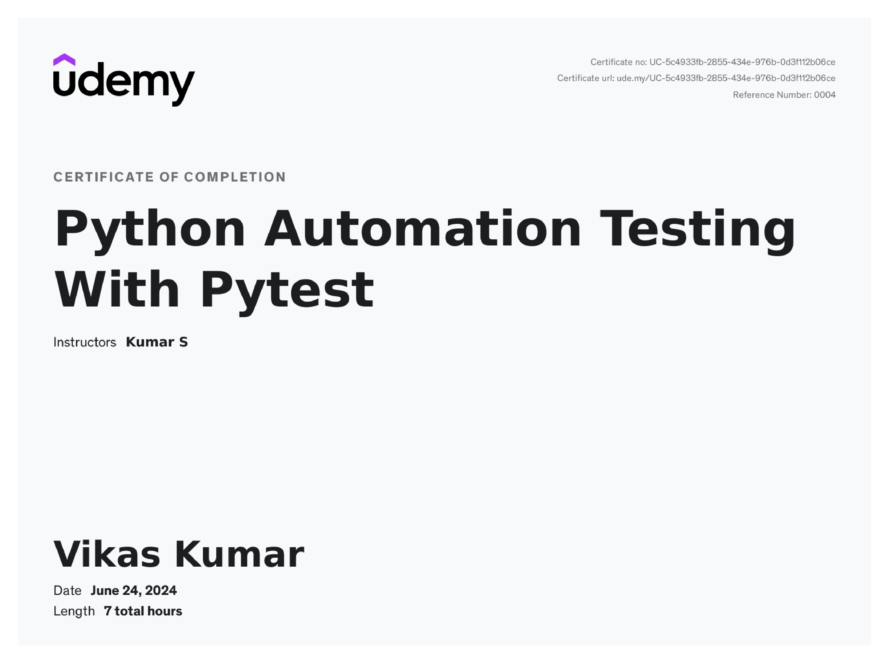

My Certifications

Python Automation Testing With Pytest

GitLab CI/CD

Jenkins CI/CD
DevOps Engineer | Cloud Expert | Automation Specialist
Welcome! I'm Vikas, a passionate DevOps Engineer dedicated to streamlining development workflows, optimizing infrastructure, and ensuring seamless software deployments. With expertise in CI/CD pipelines, cloud computing, containerization, and automation, I specialize in building efficient, scalable, and resilient systems that drive innovation and reliability.
Through my certifications and hands-on experience, I've honed my skills in Linux, Docker, Kubernetes, AWS, Terraform, and more, enabling businesses to accelerate their software delivery while maintaining high performance and security. Whether it's automating infrastructure provisioning, optimizing deployment strategies, or enhancing system monitoring, I thrive on solving complex challenges and driving efficiency.
Feel free to explore my certifications and professional accomplishments—I’m always eager to contribute to impactful projects and innovations!.
Python Automation Testing With Pytest
GitLab CI/CD
Jenkins CI/CD